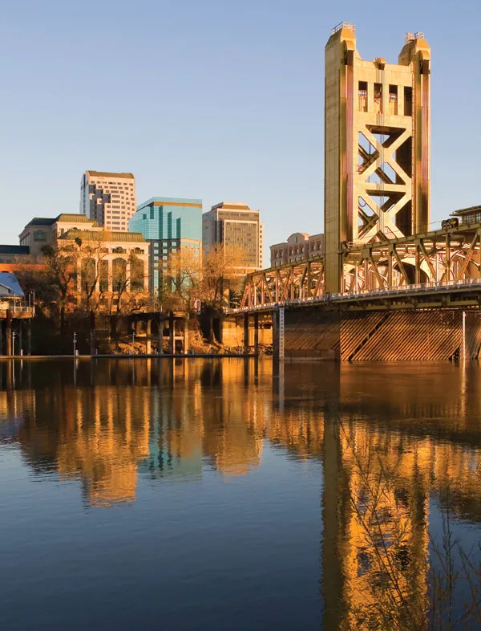

Sacramento, the capital of California, is a vibrant city with a rich history and a thriving arts and culture scene. Located at the confluence of the Sacramento and American Rivers, it offers a diverse range of attractions and activities for visitors to enjoy.
Immerse yourself in the city's history by visiting Old Sacramento, a preserved historic district with charming wooden sidewalks, historic buildings, and museums. Explore the California State Capitol and Museum, where you can learn about the state's political history and take a tour of the capitol building.
Sacramento is known for its vibrant arts and culture scene. Visit the Crocker Art Museum, one of the oldest art museums in the Western United States, featuring a diverse collection of art from different eras and cultures. Catch a performance at the Sacramento Theatre Company or the Community Center Theater.
Nature enthusiasts can enjoy the beautiful outdoors at the American River Parkway, a 23-mile stretch of parkland along the river, perfect for hiking, biking, and picnicking. Explore the stunning gardens and arboretum at the California State University, Sacramento (Sacramento State), or take a leisurely stroll along the riverfront promenade.
Sacramento is also a food lover's paradise, with a burgeoning farm-to-fork culinary scene. Explore the bustling farmers' markets to taste fresh local produce and artisanal products. Indulge in delicious cuisine at the city's diverse range of restaurants, from fine dining establishments to casual eateries.
For a unique experience, take a scenic river cruise on the Sacramento River or join a historical walking tour to learn more about the city's past. Visit the California State Railroad Museum to explore the history of the railroad in California, or take a ride on the Sacramento RiverTrain for a nostalgic journey through the countryside.
Sacramento also hosts a variety of festivals and events throughout the year, including the annual California State Fair, featuring amusement rides, concerts, and a wide range of exhibits. Don't miss the vibrant Second Saturday Art Walk, where local galleries and shops open their doors for an evening of art, music, and food.
With its unique blend of history, culture, and natural beauty, Sacramento is a hidden gem in California. Whether you're exploring its historic districts, enjoying its vibrant arts scene, or savoring its farm-fresh cuisine, Sacramento offers a memorable experience for visitors.